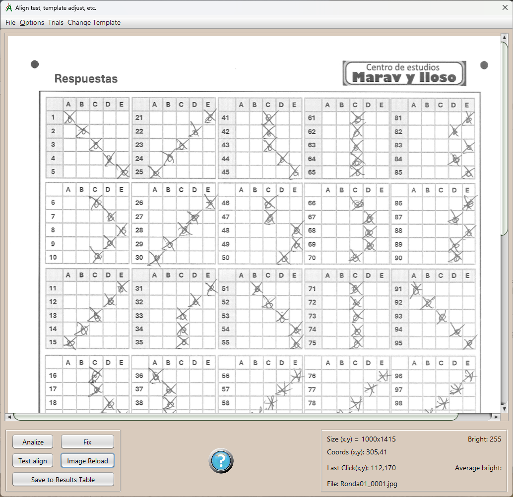
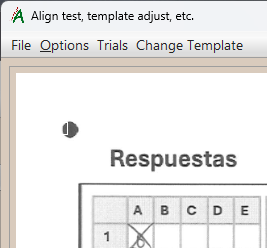
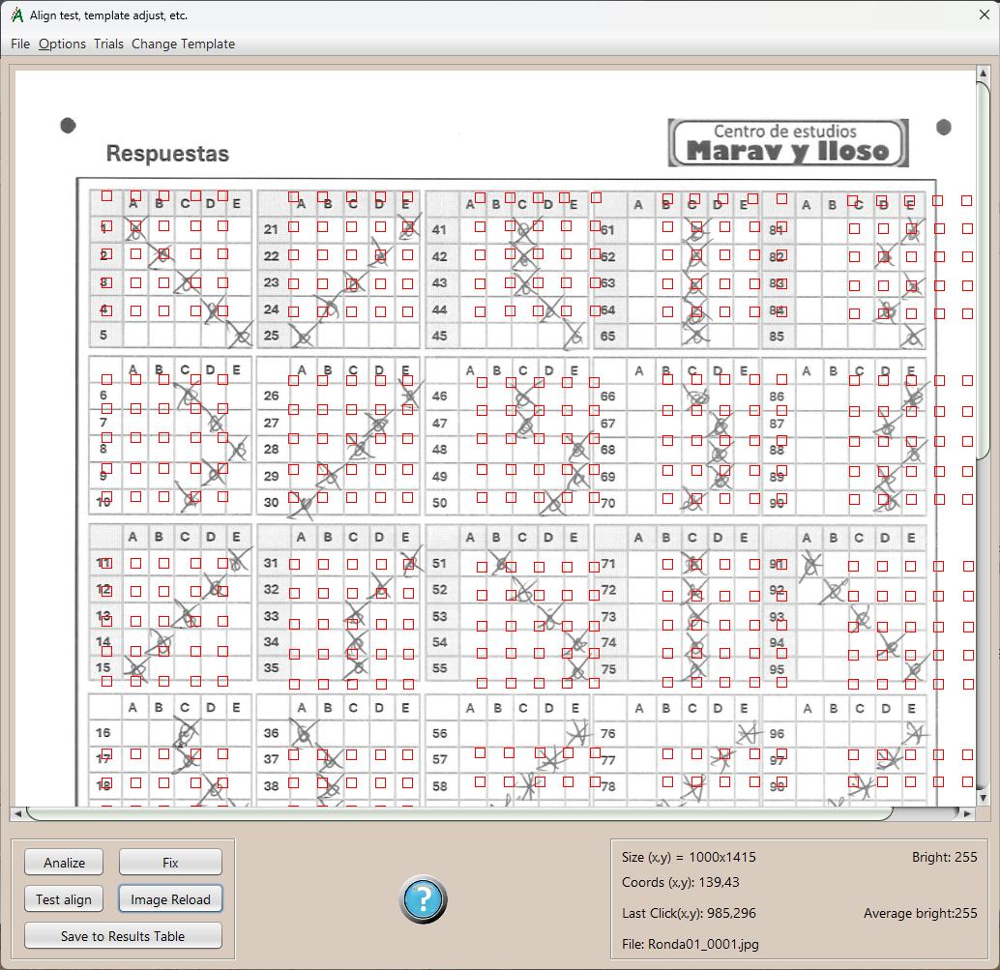
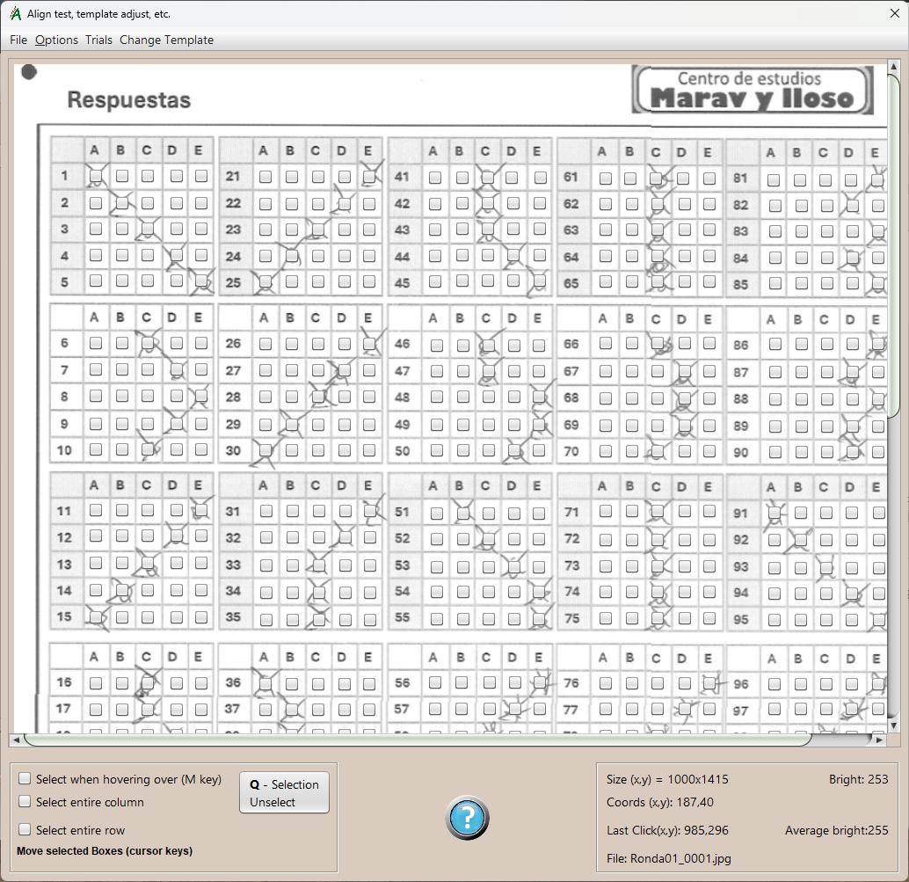
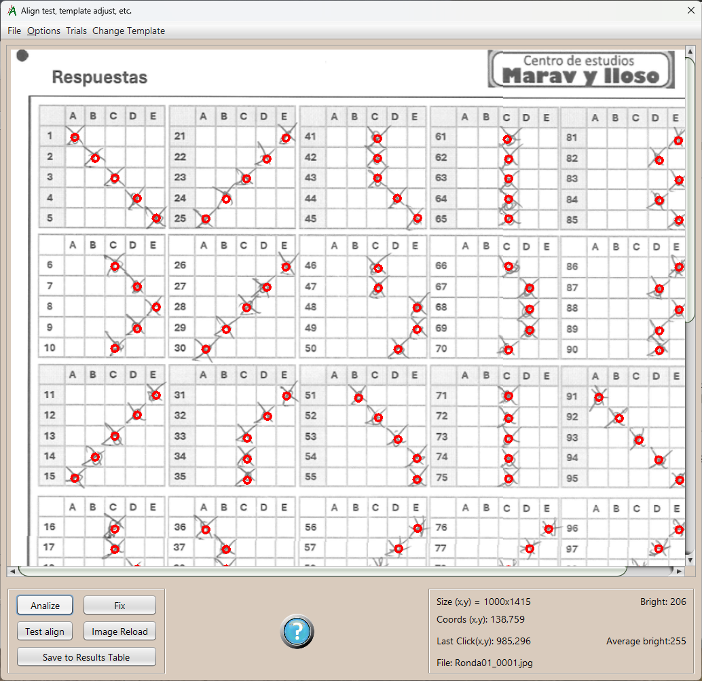
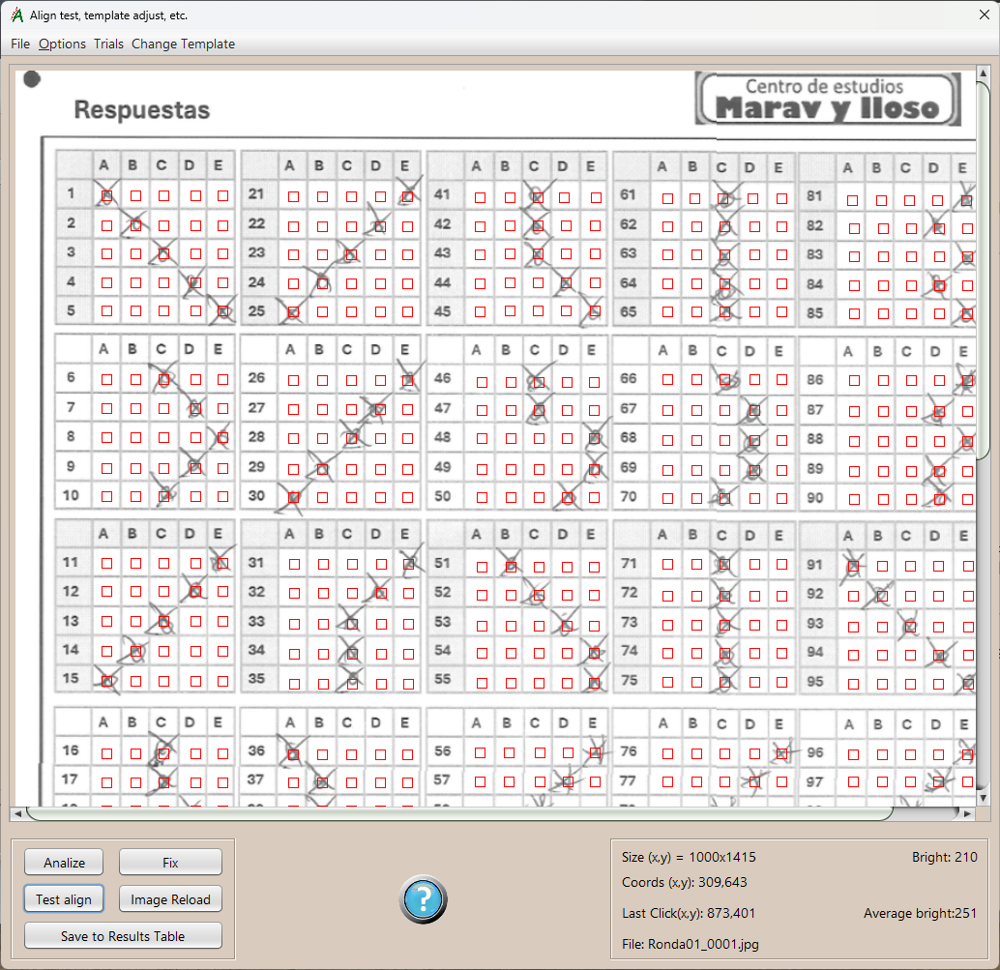
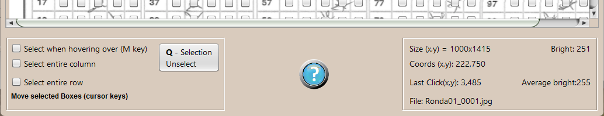

Reading Tests and Adjustments
Reading and interpreting answer sheets images. Testing and adjusting settings to optimize capture.
When image capture results are not satisfactory, you can test here to adjust the answers sheet capture settings.
Menu options:
Archive- Open:
Select and open the graphic file that contains the answer sheet whose capture we want to test and adjust.
- Settings:
Capture parameters for answers sheet images. These are the same as the ones mentioned on the main window.
- Corner location:
Find and paint the corner detection marks. All four must be located; a white square, or part of a square, appears in each them. Keyboard shortcut: "E" key.
 - Paint Mark Location:
Paint on the image the position and area where the answer marks will be searched. Keyboard shortcut: "C" key.

- Modification active:
After the adjustments are made in the image, following current Settings, all the boxes where answer marks in the answer sheet will be searched, are placed in the image.
Then, desired checkboxes could be selected in order to change the position where these marks will be searched, using the cursor keys or by dragging them with the mouse.
 - Save Template:
Only available if the edition is active. Store the new layout of the answer sheet mark boxes, where the answer marks will be searched from now on.
Bottom panel, action buttoms:
Analize:
Complete image analysis, according to the current setup. All the boxes are searched according to the coordinates defined in the answers
sheet template and then the resulting marks is painted.

Fix:
Geometric and cropping changes are made to the image, according to the current settings, to check them.
Test Align:
It has the same effect as the menu option "Paint mark location", but after Adjustments in the image, according to the previous paragraph "Fix",
are made ; Now we can see if the alignment is correct, otherwise we would use the "Modify template" option described above.

Image reload: Reload the last working image. It cleans up the drawings and geometric changes made. The result is the same as opening the same image from the "open" menú. useful for repetitive testing.
Save to result table: Performs a full analysis of the image and save the results in the main window table, when we consider the capture results are correct. This is very useful if we have to modify the template to read a test that has a too deteriorated image and/or we want to correct the tests one by one.
Template edition panel:
When the test template is being edited, the bottom panel goes into edit mode.
To make template marks edition easily, depending on the option checked, we can select boxes one by one, hovering the mouse
over it or entire columns and/or rows. The options can be combined. The "hovering over" selection can also be turned on/off with a keyboard shortcut, the M key.
The "Selection unselect" button (keyboard shortcut "Q"), de-selects all checkboxes.
In the lower right panel we have useful information to work on editing and testing the template:
- Image size.
- Brightness of the current Mouse Position Point.
- Coordinates of that point.
- Coordinates of the last mouse click point.
- Average brightness of the mark area of last mouse click point; it is the one used to locate corners and answer marks.
- Image Filename.